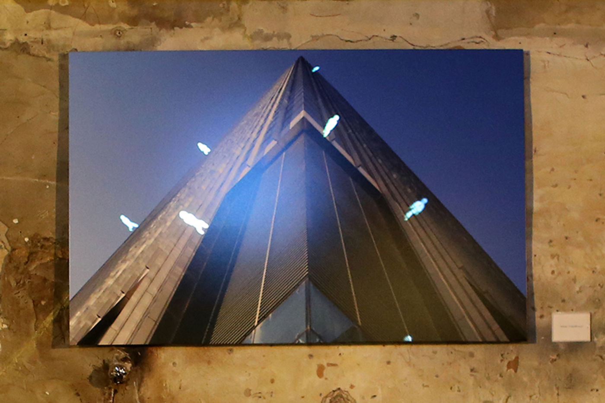
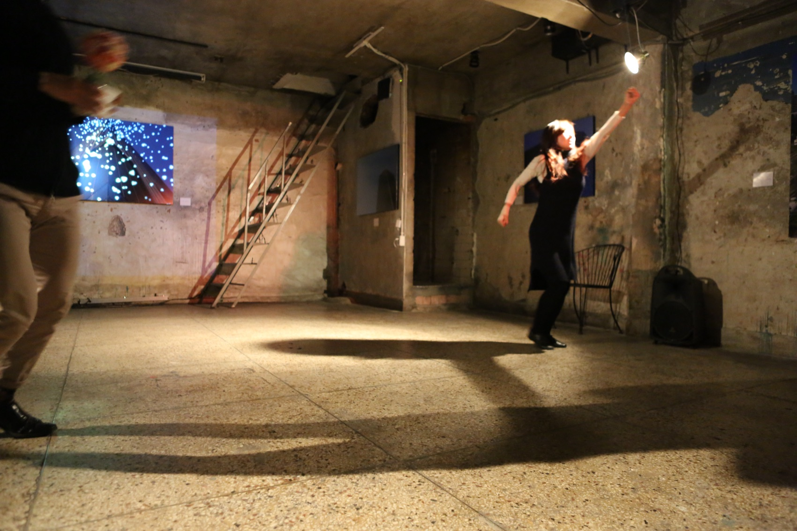
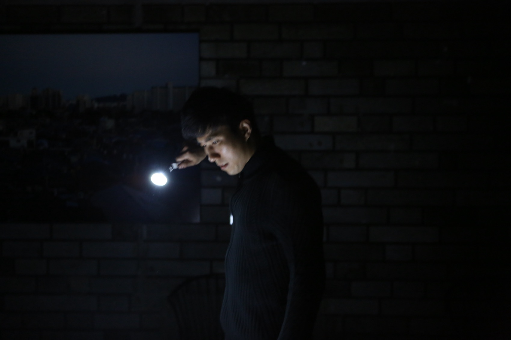
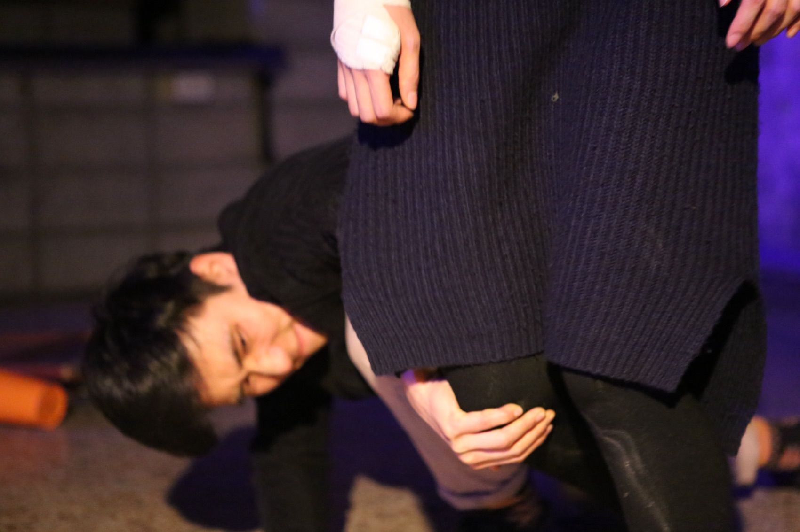
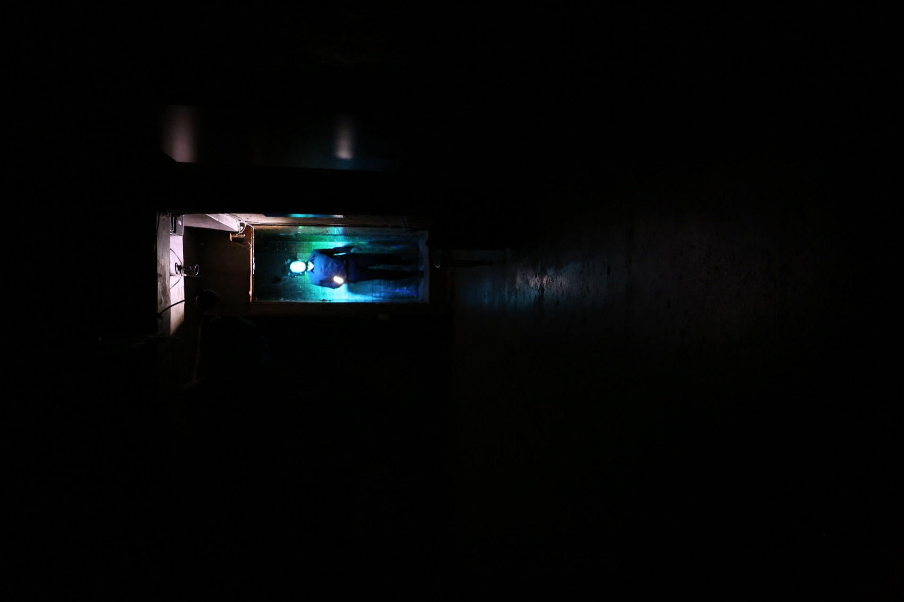
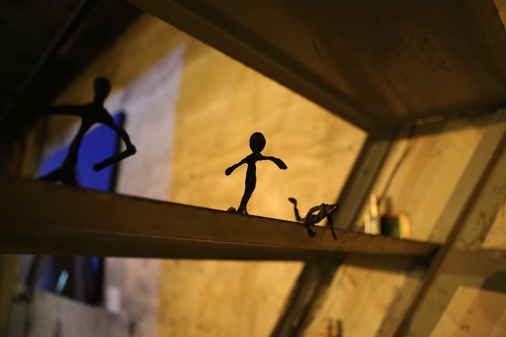
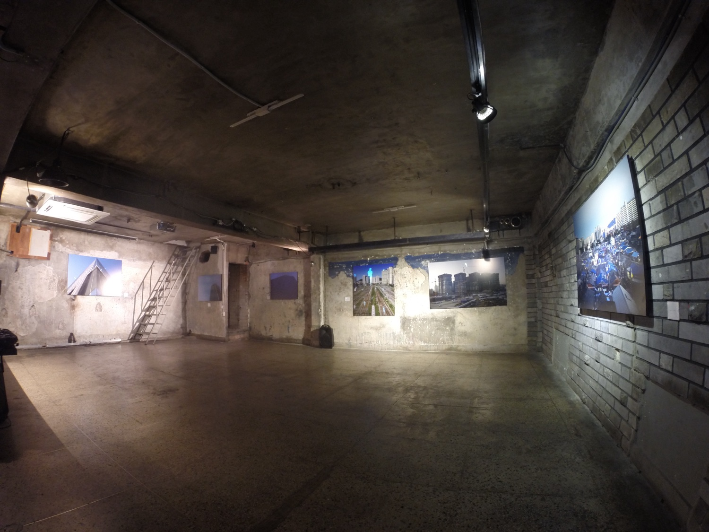
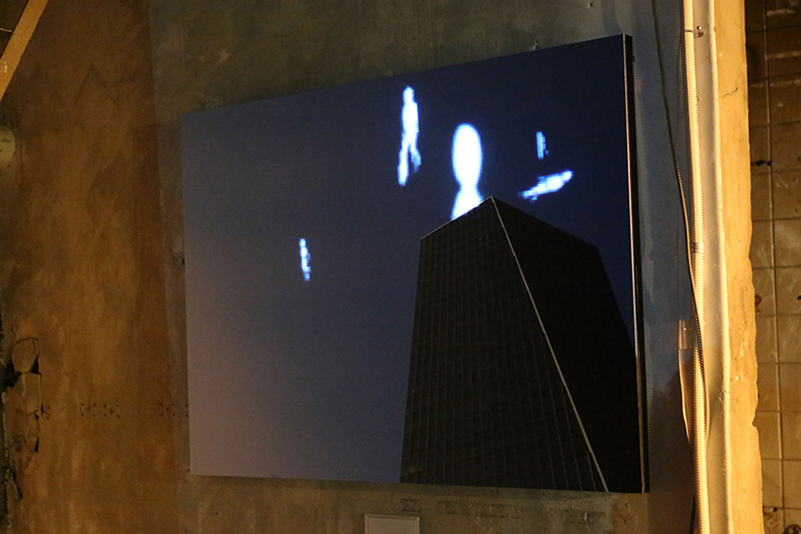
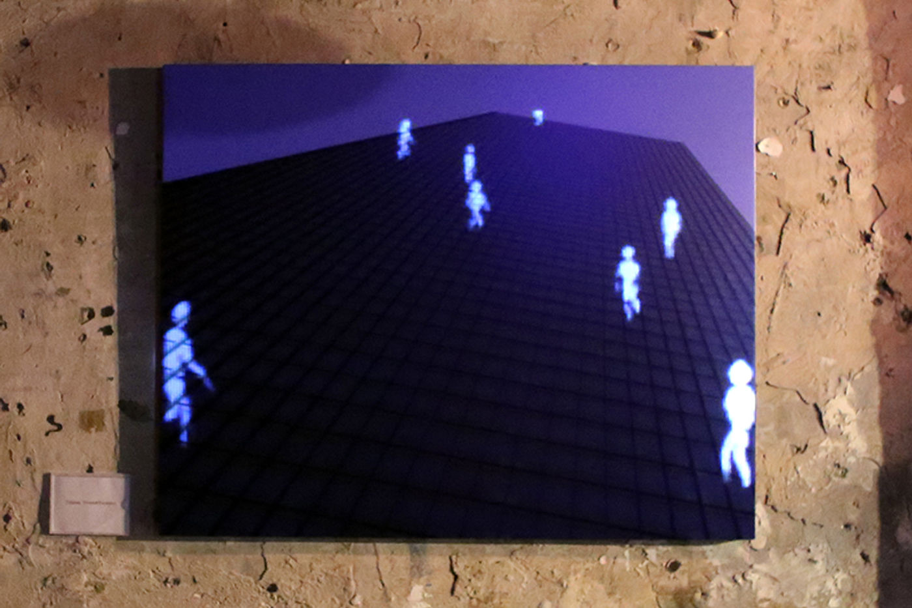

Performance & Exhibition — 2016
Salto Mortale살토 모탈레 · M
살토 모탈레 — ‘죽음을 무릅쓴 점프, 목숨을 건 도약.’ 이상의 〈날개〉를 모티브로, 화가가 그림을 그려나가는 과정을 통해 꿈과 현실을 오가는 장소특정형 다원전시퍼포먼스.
Salto mortale — ‘the deadly leap, a jump staked on one’s life.’ After Yi Sang’s ‘Wings,’ a site-specific performance-exhibition crossing dream and reality through a painter’s act of painting.
‘살토 모탈레, 아름다운 도약을 꿈꾸다.’ 대안공간 정다방 프로젝트의 지하 공간에서 공연과 전시를 동시에 선보인 작품입니다. 꿈(Dream), 사랑(Love), 편지(Letter), 풍경(Landscape)이 작품의 핵심 은유로 작용하고, 바흐·슈베르트·쇤베르크·드뷔시의 선율이 열두 개의 장면을 떠받칩니다. 무대에는 하늘로 향하는 계단, 화가의 이젤, 전달자의 타자기, 그리고 우체통이 놓입니다 — 화가·남자·여자·전달자 네 인물이 편지를 쓰고 전하고 찢으며, 어긋나는 사랑의 끝에서 여자는 계단을 오르고 아주 환한 빛이 퍼져 나옵니다.
빛과 그림자, 영상, 피지컬 컴퓨팅 — 솔레노이드 장치와 LED 캔버스가 시공간의 일루전을 연출하고, 배우들은 스스로 리서치한 동작으로 장면을 짓는 작가적 신체언어를 구현합니다. 마네킹·점선·마그네틱·구슬 메소드 같은 움직임의 방법들이 그리는 자와 그려지는 자, 다가섬과 어긋남의 관계를 몸으로 번역합니다.
‘Salto mortale — dreaming a beautiful leap.’ In the basement of the alternative space Jungdabang Project, the work presented performance and exhibition at once. Dream, Love, Letter and Landscape serve as its central metaphors, carried by Bach, Schubert, Schoenberg and Debussy across twelve scenes. On stage: a stair toward the sky, a painter’s easel, a messenger’s typewriter, a postbox — painter, man, woman and messenger write, deliver and tear letters until, at the end of a love gone astray, the woman climbs the stair into a blaze of light. Light and shadow, video and physical computing — solenoid devices and LED canvases — conjure the illusion of space-time, while the actors build each scene from movements of their own research: an authorial body language, translating drawing and being-drawn, approach and estrangement, through mannequin, dotted-line, magnetic and marble methods.
- 구성·연출·미디어아트
- Concept, direction, media art
- 김제민 Kim Jae Min
- 출연
- Performers
- 권지현 · 박병호 · 김형진 · 조도경
- 스태프
- Staff
- 기획 송희경 · 영상 황윤정 · 사진 유상윤 · 무대감독 지재우 · 조연출 김혜진 · 촬영 류광환
- Producer Song Hee-kyung · video Hwang Yun-jung · photography Yu Sang-yun · stage manager Ji Jae-woo · assistant director Kim Hye-jin
- 제작·후원
- Production & support
- M · 서울특별시 · 서울문화재단 예술창작활동지원
- M · Seoul Foundation for Arts and Culture
- 키워드
- Keywords
- Yi Sang · leap · tableau vivant · physical computing
구성 — 꿈 · 사랑 · 편지 · 풍경
Structure — Dream · Love · Letter · Landscape
열두 개의 장면, 세 통의 편지
Twelve scenes, three letters
퍼포먼스 텍스트는 일곱 번의 개고를 거쳤다. 네 개의 은유가 순환하며 장면을 잇고, 각 장면은 하나의 음악과 하나의 움직임 메소드로 지어진다.
The performance text passed through seven drafts. Four metaphors cycle through the scenes, each built on one piece of music and one movement method.
01
Landscape — 시간의 풍경
Landscape — of Time
전달자의 첫 편지가 우체통에 넣어지고, 네 인물이 저마다의 속도로 걷는다. 구석방에서는 철사 미니어처의 라이브 시네마가 계단 위로 도심 풍경을 흘린다.
♪ Bach, Goldberg Variations (Glenn Gould)
The messenger’s first letter enters the postbox; four figures walk at their own speeds, while a live cinema of wire miniatures pours a cityscape over the stair.
♪ Bach, Goldberg Variations (Glenn Gould)
02
Dream — 드로잉
Dream — Drawing
화가가 여자를 그린다. 마네킹 메소드로 그리는 자와 그려지는 자의 관계가 드러난다. 어디선가 타자기 소리.
♪ Brian Eno, Bloom
The painter draws the woman; the mannequin method exposes the relation of drawer and drawn. Somewhere, a typewriter.
♪ Brian Eno, Bloom
03
Love — 점에서 선으로
Love — Point to Line
눈이 내리고(영상), 남자와 여자가 점선 메소드로 조심스럽게 가까워진다. 핑거댄스, 그리고 마그네틱 메소드로 발전하는 사랑.
♪ Bach, Sarabande BWV 816 · Musyc algorithm
Snow falls (video); man and woman near each other by the dotted-line method — finger dance, then love advancing by the magnetic method.
♪ Bach, Sarabande BWV 816 · Musyc algorithm
04
Landscape — 그림 풍경
Landscape — of the Picture
화가가 두 사람을 그리자 그림 속의 남녀가 자유를 얻기 시작한다. 화가는 LED 캔버스를 들고 움직이고, 그 빛 속으로 남녀가 걸어 들어온다.
♪ Schubert, Piano Sonata D.960
As the painter draws the couple, the figures in the picture begin to move free. He carries an LED canvas, and the two walk into its light.
♪ Schubert, Piano Sonata D.960
05
위협
Threat
타블로 비방의 ‘떨어지는 사람들’ 영상과 솔레노이드 소리. 방마다 새어 나오는 LED 빛이 전달자를 끌어당기고, 구슬 메소드가 위협 속의 혼란을 몸으로 옮긴다.
♪ Schoenberg, Verklärte Nacht
The tableau vivant’s falling figures, and the sound of solenoids. LED light leaking from room to room pulls the messenger in; the marble method renders panic under threat.
♪ Schoenberg, Verklärte Nacht
12
살토 모탈레
Salto Mortale
여자는 남자의 편지를 찢고 떠난다. 다시 눈이 내리고 — 여자는 천천히 하늘로 향한 계단을 오른다. 계단 위쪽에서 아주 환하고 강한 빛이 퍼져 나온다.
♪ Debussy, Préludes I — Lent et grave
The woman tears the man’s letter and leaves. Snow again — and she slowly climbs the stair toward the sky, a strong white light spreading from above.
♪ Debussy, Préludes I — Lent et grave
전시 — Tableau Vivant 연작
Exhibition — the Tableau Vivant series
여의도, 텅 빈 공간 위를 걷는 사람들
Yeouido — figures walking on empty space
공연 사이의 닷새 동안 같은 공간이 전시장이 됩니다. 타블로 비방(Tableau Vivant, 살아 움직이는 그림)은 사진과 영상 매체가 결합한 미디어아트 형식으로, 장소성에 기반해 사진이라는 찰나적 공간에 시간성을 중첩시킵니다. 대형 사진을 스크린과 프로시니엄 개념으로 수용하고, 프로젝션 맵핑으로 생명을 불어넣는 작업 — 무대 위의 배우와 시노그라피를 연출하는 일과 유사합니다.
사진은 모두 금융 마천루의 섬 여의도에서 촬영되었습니다. 연작에 등장하는 사람들은 모두 텅 빈 공간 위를 걷고 있습니다 — 마르크스가 금융 투기를 가리켜 빌려 쓴 말, ‘살토 모탈레(목숨을 건 도약)’가 이 풍경의 다른 이름입니다. 전년도 유포리아 시리즈의 #Babel Tower, #Between, #Euphoria에 이어, 이번 전시에서는 #Salto Mortale, #Escalator, #Everest를 선보였습니다.
For the five days between performances, the same space becomes a gallery. Tableau vivant — the living picture — is a media-art form joining photography and video: grounded in place, it layers time back onto the instantaneous space of the photograph, treating the large print as screen and proscenium and breathing life into it through projection mapping — much like directing actors and scenography on a stage. Every photograph was taken in Yeouido, Seoul’s island of financial towers; everyone in the series walks on empty space — the very figure Marx borrowed when he called financial speculation a salto mortale, a leap staked on one’s life. Following #Babel Tower, #Between and #Euphoria of the previous year’s Euphoria series, this exhibition presented #Salto Mortale, #Escalator and #Everest.
- M
- About M
- 신체언어와 미디어아트를 기반으로 예술적 실험과 결합을 시도하는 단체. 일상적 움직임에서 출발한 신체언어의 보이지 않는 네트워크(invisible network)를 탐색하고, 텍스트·이미지·소리 등 다양한 매체와의 융합으로 새로운 의미 그물망을 펼쳐 나간다.
- A group experimenting at the join of body language and media art — tracing the invisible network of movement that begins in the everyday, and unfolding new webs of meaning through fusion with text, image and sound.
퍼포먼스 기록 — 정다방 프로젝트, 2016. 1.
Performance record — Jungdabang Project, Jan 2016






Tableau Vivant 연작 — 정다방 프로젝트, 2016
The Tableau Vivant series — Jungdabang Project, 2016

